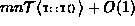
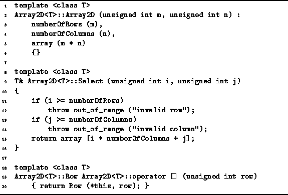

Data Structures and Algorithms
with Object-Oriented Design Patterns in C++
Data Structures and Algorithms
with Object-Oriented Design Patterns in C++
In this section we illustrate the implementation of a multi-dimensional array
by giving the code for a generic two-dimensional array class,
Array2D<T>,
which is derived from the Array<T> class
discussed in Section  .
The declaration of the Array2D<T> class template
is shown in Program .
.
The declaration of the Array2D<T> class template
is shown in Program .

Program: Array2D<T> and Array2D<T>::Row Class Definitions
Objects of the Array2D<T> class contain three member variables--numberOfRows, numberOfColumns, and array.
The first two record the dimensions of the array.
The last is an instance of the one-dimension array object
discussed in Section .
The definitions of the Array2D<T> class member functions
are given in Program .
The constructor takes two arguments, m and n,
which are the desired dimensions of the array.
It calls the Array<T> class constructor
to build a one-dimensional array of size mn.
Using the result from Section ,
it can be shown that the running time
for the Array2D<T> constructor is .

Program: Array2D<T> Class Member Functions
The Select function takes two arguments, i and j,
and returns a reference to the  element of the array.
In the previous section we saw that the running time for the array
subscripting calculation in an k-dimensional array is O(k).
For a two-dimensional array, k=2.
Therefore, the running time for the subscript calculation is O(2)=O(1).
element of the array.
In the previous section we saw that the running time for the array
subscripting calculation in an k-dimensional array is O(k).
For a two-dimensional array, k=2.
Therefore, the running time for the subscript calculation is O(2)=O(1).
 Copyright © 1997 by Bruno R. Preiss, P.Eng. All rights reserved.
Copyright © 1997 by Bruno R. Preiss, P.Eng. All rights reserved.